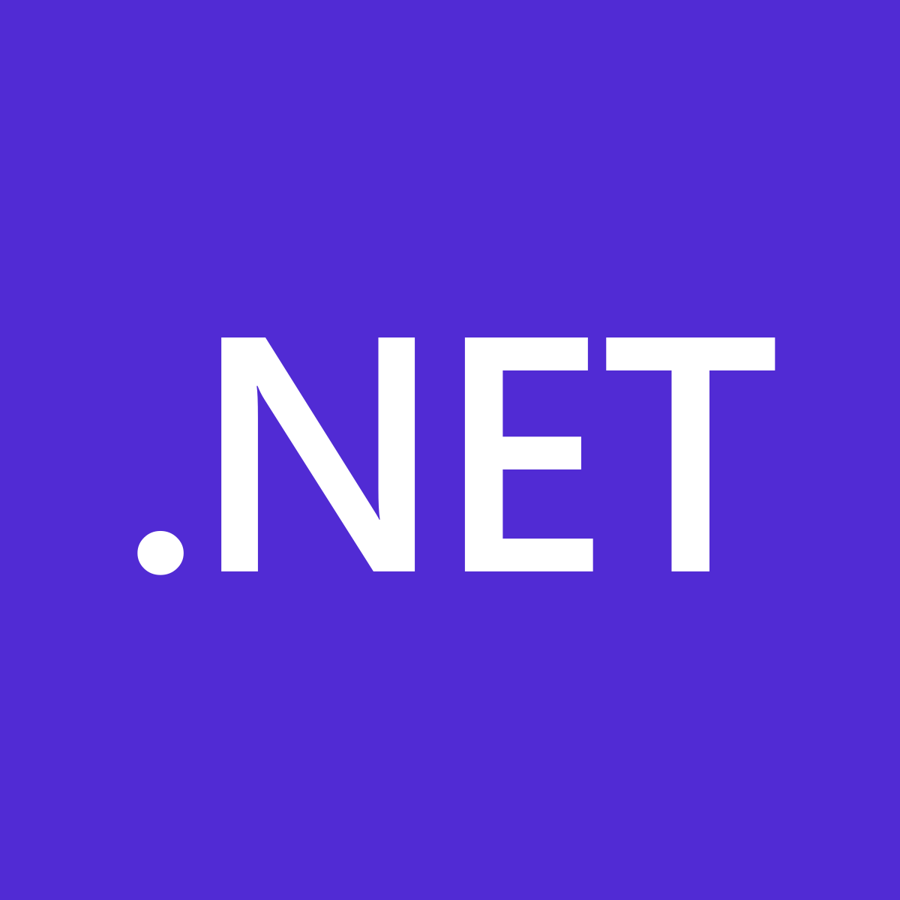

Lenguajes de Programación

JAVA
Java es un lenguaje de programación de propósito general, uno de los más populares y con mayor aplicación ya que es capaz
de ejecutarse en la mayoría de sistemas operativos y dispositivos gracias a una máquina virtual que existe en cada sistema
que es capaz de ejecutar Java y hacer de puente entre el lenguaje de programación y el dispositivo.
Actualmente se encuentra en propiedad de Oracle.
Para visitar la página web, haga click AQUÍ

C
C es un lenguaje de programación orientado a la implementación de Sistemas Operativos, se destaca por su eficiencia en el
código que produce y es el lenguaje de programación más popular para crear software de sistemas y aplicaciones.
Se trata de un lenguaje de tipos de datos estáticos y débilmente tipificado. Sus compiladores suelen ofrecer extensiones
que posibilitan mezclar código.
Para visitar la página web, haga click AQUÍ

PYTHON
Python es un lenguaje independiente de plataforma y orientado a objetos, preparado para realizar desde aplicaciones
a servidores de red o incluso, páginas web. Es un lenguaje interpretado, lo que significa que no se necesita compilar
el código fuente para poder ejecutarlo, lo que ofrece ventajas como la rapidez de desarrollo e inconvenientes como
una menor velocidad.
Para visitar la página web, haga click AQUÍ

C#
C# es el nuevo lenguaje de propósito general orientado a objetos creado por Microsoft para su nueva plataforma .NET.
combina los mejores elementos de múltiples lenguajes de amplia difusión como C++, Java, Visual Basic o Delphi.
Para visitar la página web, haga click AQUÍ

C++
C++ es un lenguaje de programación híbrido con la intención de extender al lenguaje de programación C
mecanismos que permiten la manipulación de objetos. Posteriormente se añadieron facilidades de programación
genérica, que se sumaron a los paradigmas de programación estructurada y programación orientada a objetos.
Para visitar la página web, haga click AQUÍ

VISUAL BASIC
Visual Basic es un lenguaje de programación que contiene un entorno de desarrollo integrado que integra editor de
textos para edición del código fuente, un depurador, un compilador y un editor de interfaces gráficas o GUI.
Para visitar la página web, haga click AQUÍ

JAVA SCRIPT
JavaScript es un lenguaje de programación interpretado. Se define como orientado a objetos, basado en
prototipos, imperativo, débilmente tipado y dinámico. Se utiliza principalmente del lado del cliente,
implementado como parte de un navegador web permitiendo mejoras en la interfaz de usuario y páginas web dinámicas.
Para visitar la página web, haga click AQUÍ

NET
.NET es un framework de Microsoft que hace un énfasis en la transparencia de redes, con independencia de
plataforma de hardware y que permite un rápido desarrollo de aplicaciones.
Para visitar la página web, haga click AQUÍ
.png)
RUBY
Ruby es un lenguaje de programación interpretado, reflexivo y orientado a objetos, Combina una sintaxis
inspirada en Python. Comparte también funcionalidad con otros lenguajes de programación. Su implementació
oficial es distribuida bajo una licencia de software libre.
Para visitar la página web, haga click AQUÍ

PHP
PHP es un lenguaje de programación de uso general que se adapta especialmente al desarrollo web.
Originalmente significaba Personal Home Page (Página personal), pero ahora significa el inicialismo
recursivo PHP: Hypertext Preprocessor.
Para visitar la página web, haga click AQUÍ
.png)
SWIFT
Swift es un lenguaje de programación multiparadigma creado por Apple enfocado en el desarrollo de
aplicaciones para iOS y macOS. Puede usar cualquier biblioteca programada en Objective-C y llamar
a funciones de C. Swift tiene la intención de ser un lenguaje seguro, de desarrollo rápido y conciso.
Para visitar la página web, haga click AQUÍ

SQL
SQL, por sus siglas en inglés: Structured Query Language, es un lenguaje de dominio específico
utilizado en programación y diseñado para administrar o recuperar información de sistemas de
gestión de bases de datos relacionales. Su manejo del álgebra y el cálculo relacional efectua
consultas con el fin de recuperar, de forma sencilla, información de bases de datos, así
como realizar cambios en ellas.
Para visitar la página web, haga click AQUÍ